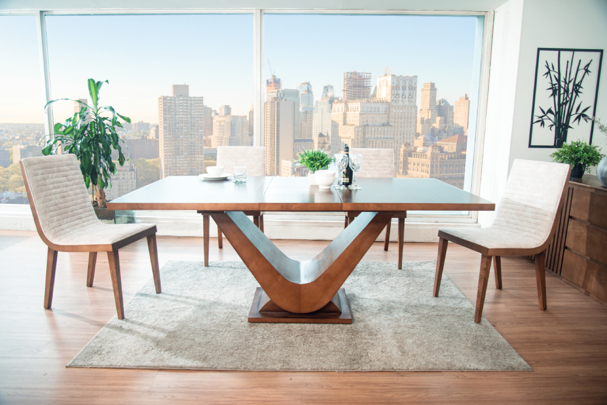
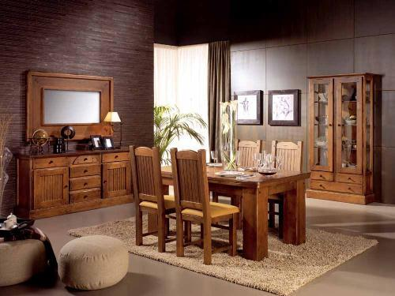
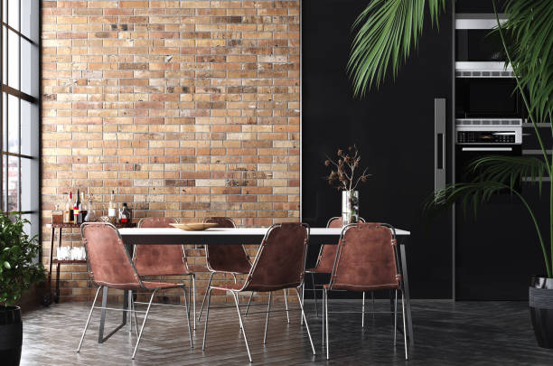

Comedor Moderno
Diseño elegante y minimalista, ideal para espacios contemporáneos.

Comedor Clásico
Comedor de estilo tradicional con acabados de madera y detalles artesanales.

Comedor Rústico
Ideal para ambientes naturales y acogedores, hecho con materiales orgánicos.

Comedor Industrial
Estilo robusto con materiales metálicos y maderas sin tratar, perfecto para lofts.